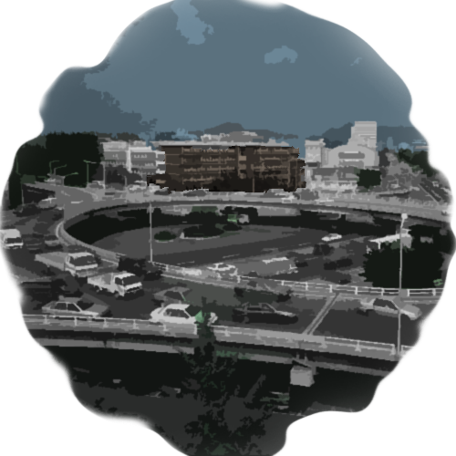

You attempt to change the topic
“How do you know that we’re in Samgakji?” you ask in an attempt to change the topic. She looked too sad to keep her stewing in her memories.
“The first thing I noticed while I was escaping was the rotary. It was huge and there is only one in the entire Seoul, here in Samgakji, so I figured.”
Silence begins to fill as you both recall your family, friends, life before this all happened. “{Insert your name}. My name is {insert your name}.”
“Well, {insert your name}, at the end of it all at least we’re in it together.”
“One silver lining is very dark cloud, but I’ll take it.” You squeeze her hand and pray -
please go easy on me.